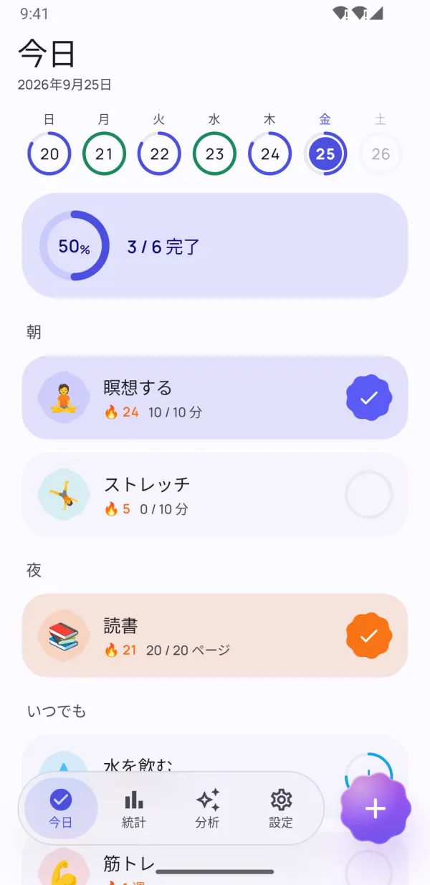
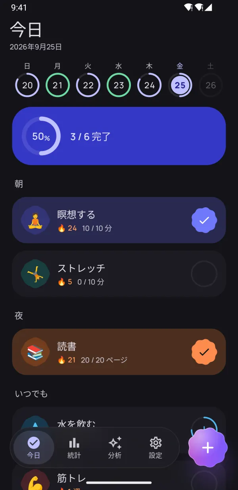
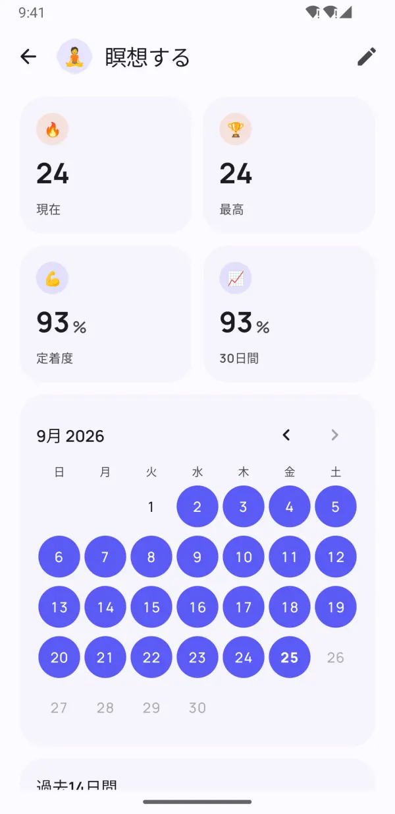
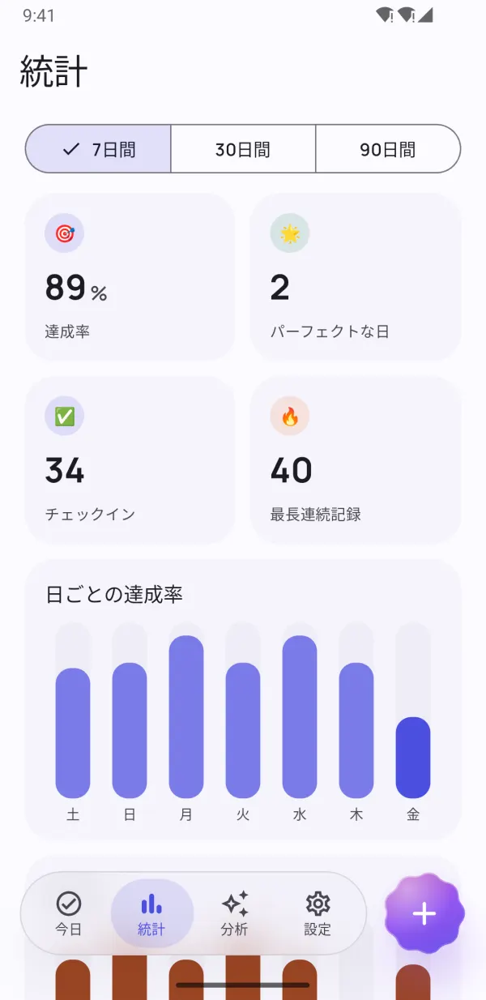
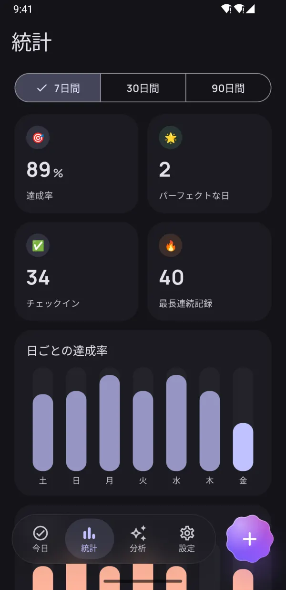
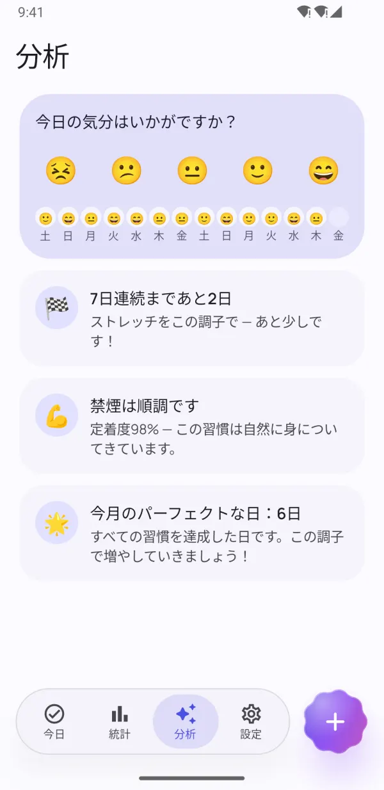
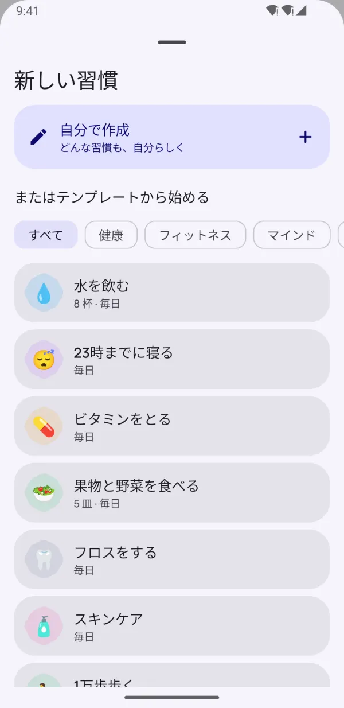
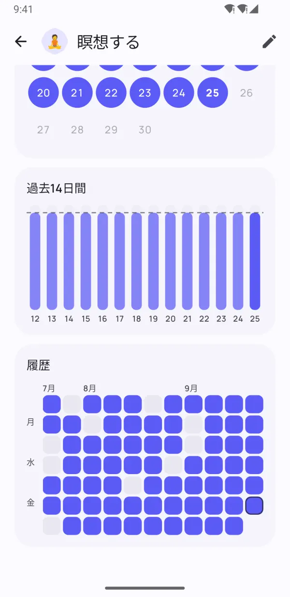

小さな習慣が、
大きな変化に。
Dotdayは、良い習慣を身につけ、悪い習慣をやめる習慣化を、プレッシャーなしでサポートします。ワンタップでチェックイン、忙しい日もストリークを守り、自分に本当に合うルーティンが見えてきます。
- 無料で使える
- 登録不要
- データはスマホの中だけ
- 13言語に対応


習慣が続くように設計
続けるために必要なものはすべて。じゃまになるものは何もありません。
1日のすべてを、ワンタップで
朝・昼・夜のグループで、毎日のルーティンがシンプルなチェックリストに。タップひとつで完了です。
- はい/いいえ、回数、タイマー、やめたい習慣
- 週のバーで毎日の状況がひと目でわかる
- リマインダーから直接「完了」「10分後」

1日できなくても大丈夫なストリーク
休息日、柔軟なスケジュール、ストリークフリーズで無理なく続けられます。習慣の定着度で、連続日数だけでなく習慣がどれだけ身についているかがわかります。
- 「この日をスキップ」してもストリークは途切れない
- 忙しい日や体調不良の日にはストリークフリーズ
- 習慣の定着度を0〜100%のスコアで表示


本当の進み具合が見える
ヒートマップ、カレンダー、達成率の推移で、7日・30日・90日の調子が正確にわかります。
- すべての習慣のヒートマップ
- 最長連続記録と達成率
- ライトモードでもダークモードでも美しく

続ける力をくれる分析
気分を数秒で記録するだけで、Dotdayが本当に効果のあることを見つけます。調子の良い曜日・苦手な曜日、そして気分を上げてくれる習慣も。
- ワンタップで気分をチェックイン
- 次のマイルストーン前のひと押し
- 自分を幸せにする習慣が見つかる
小さな工夫が、大きな違いに
記録をぐっとラクにする、細やかな機能。
ホーム画面ウィジェット
アプリを開かずに今日の習慣をチェック。ストリークやヒートマップも表示できます。
ちゃんと役立つリマインダー
通知から直接「完了」にしたり、「10分後」に再通知したりできます。
タイマー内蔵
時間を計る習慣には、ライブ通知付きのタイマーを用意。
Health Connect
歩数・睡眠・ワークアウトで習慣を自動的に完了できます。
40種類のテンプレート
水分補給、読書、筋トレ、瞑想、禁煙 — 数秒で始められます。
1日を計画
習慣を朝・昼・夜のグループに分けて整理。
メモと気分
どの日にもメモを残せて、習慣が気分にどう影響するかがわかります。
ダークモード＆AMOLED
Material Youカラーと、有機EL画面向けのピュアブラックテーマ。
バックアップとエクスポート
ProならすべてのデータをJSONやCSVにエクスポートでき、新しいスマホで復元できます。
アプリの中をのぞいてみよう
続く習慣をつくろう 本当の成長が見える 統計がひと目でわかる 続ける力になる分析 
40種のテンプレートですぐ開始 ダークモードも美しく 
毎日をきれいに記録 プライベート。登録不要・広告なし
習慣を選ぶ
40種類のテンプレートから選ぶか、自分で作成。どんな習慣も、自分のやり方で。
毎日チェックイン
「今日」画面、ウィジェット、通知からワンタップで。
習慣が身につく
ストリーク、習慣の定着度、分析で成長が目に見えます。
プライバシー重視の設計
アカウント不要。登録不要。広告なし。習慣、メモ、気分の記録はすべてスマホの中だけに保存され、私たちが見ることはありません。 プライバシーポリシー
- アカウント不要
- 広告なし
- オフライン
- データはあなたのスマホに
Proですべての機能を
基本機能はずっと無料。Proにアップグレードすれば習慣は無制限、すべての機能が使えます — 7日間の無料トライアルあり。
- 習慣を無制限に作成
- すべての履歴と90日間の統計
- すべての分析と気分との相関
- Health Connectで自動記録
- すべてのウィジェット
- 毎月5回のストリークフリーズ
- 1つの習慣につきリマインダー最大5件
- JSONとCSVにエクスポート
月額・年額・買い切りから選べます。解約はGoogle Playからいつでも可能です。
よくある質問
Dotdayは無料ですか？
はい。基本機能はずっと無料です：習慣は5つまで、リマインダー、ストリーク、「今日」ウィジェット、30日間の統計が使えます。Dotday Proでは習慣が無制限になり、すべての機能が使えます。7日間の無料トライアルもあります。
アカウント作成は必要ですか？
いいえ。Dotdayはアカウントも登録もインターネット接続も不要です。インストールしてすぐに始められます。
データはどこに保存されますか？
お使いのスマホの中だけです。習慣、メモ、気分の記録が端末の外に出ることはありません。Proなら、いつでもJSONまたはCSVでバックアップをエクスポートできます。
1日できなかったらどうなりますか？
それまでの積み重ねは消えません。休息日としてその日をスキップしたり、ストリークフリーズを使ったり、毎日ではなく週ごとの目標を設定したりできます。習慣の定着度もゼロに戻らず、ゆるやかに下がるだけです。
どんな習慣を記録できますか？
4つのタイプがあります：はい/いいえ（「瞑想する」）、回数（「水を8杯」）、タイマー（「30分読書」）、やめたい習慣（「禁煙」）。
新しいスマホに習慣を移すには？
Dotday Proで「設定」→「データ」→「バックアップをエクスポート」を開き、JSONファイルを保存します。新しいスマホにDotdayをインストールし、「バックアップから復元」を選んでください。復元は無料です。
iPhone版はありますか？
まだありません。Dotdayは現在、Google PlayでAndroid向けに提供しています。
Proを解約するには？
Google Playを開き、プロフィール →「お支払いと定期購入」→「定期購入」でDotdayを選び、「解約」をタップします。買い切りの場合は解約の必要はありません。